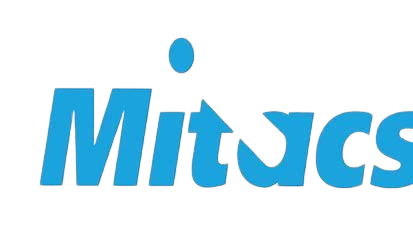
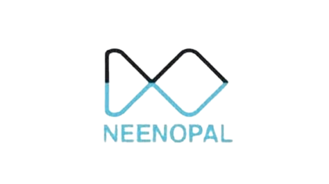
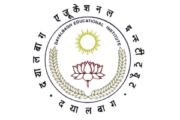

Drishti Goel

I am a Predoctoral Research Fellow at Microsoft’s M365 Research team, advised by Supriyo Ghosh and Chetan Bansal. Here, my work focuses on advancing cloud system reliability by driving innovations using large language models (LLMs) and smaller language models (SLMs), to enhance operational efficiency and root cause analysis of complex incidents. My current research work in these areas has culminated in publications at top-tier venues and has also been adopted by over 150 teams, and projected to scale over 500 teams at Microsoft.
Previously, I completed my bachelors in Electrical and Computer Science from the Dayalbagh Educational Institute, where I was fortuante to have worked with and mentored by Prof. C. Patvardhan, Swathi Swaminathan from the Grahn Lab, Lt. Prof. Hansraj K. and Dr. V. Prem Prakash
My current research interests are as follows:
- Large Language Models (LLMs) and Domain-Specific AI Adaptations
- Health-AI and Responsible AI in Real-World Applications
- AI for Software Engineering and Developer Productivity
- Human-centered Artificial Intelligence
I am particularly excited about the transformative era of artificial intelligence which we are witnessing, and want to make these technologies human-centered, and extend these to real-world applications in the industry, academia and society.
|  |  |  | |
| Research Fellow | Research Intern, UWO Canada, Grahn Lab | Data Science Intern | Electrical Engineering with a specialization in Computer Science |
| 2023 - Present | June - August, 2022 | January - May, 2022 | 2019 - 2023 |
Latest News
| Dec 15, 2024 | Book Release: Defy Your Gravity - Rise Above Challenges and Embrace Your True Potential |
|---|---|
| Nov 10, 2024 | Recorded over 25 songs over the past year as part of the “Global Children’s Diversity Drive Initiative” based in Agra. Listen to the recordings here. |
| Aug 14, 2024 | Presented my independent research work with Vaibhav Ganatra at the Machine learning for Healthcare (MLHC) conference, University of Toronto, Canada |
| Jan 20, 2024 | Graduated & Awarded the Institute’s Founder’s Medal for exhibiting academic, social service and leardship skills and all-rounder excellence (Awarded to 1 among all graduate students). Featured here |
| Sep 25, 2023 | Microsoft FHL Grand Winner: MediTrain AI - Empowering the doctors of tomorrow, today. View our project here |
Publications
- EuroSyseARCO: Efficient Automated Root Cause Analysis with Prompt OptimizationUnder Submission at 20th ACM European Conference on Computer Systems (EuroSys Fall 2025), Oct 2024
- ICSE SEIPTime Warp: The Gap Between Developers’ Ideal vs Actual Workweeks in an AI Driven EraUnder Submission at the 47th International Conference on Software Engineering, Software Engineering in Practice track (ICSE SEIP 2025), Oct 2024
- MLHCPRECISe : Prototype-Reservation for Explainable Classification under Imbalanced and Scarce-Data SettingsOct 2024